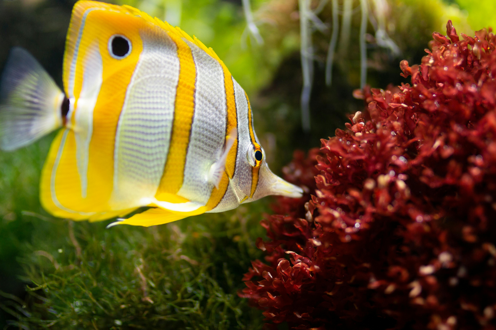

Dog
Dogs have been bred for desired behaviors, sensory capabilities and physical attributes.

Fish
Yellow fish also known as Golden Beauties. ...are common and seen in Tropical areas, Hawaii.

Cat
The cat (Felis catus), also referred to as the domestic cat or house cat, is a small domesticated carnivorous mammal.
Fish
Yellow fish also known as Golden Beauties. ...are common and seen in Tropical areas, Hawaii.